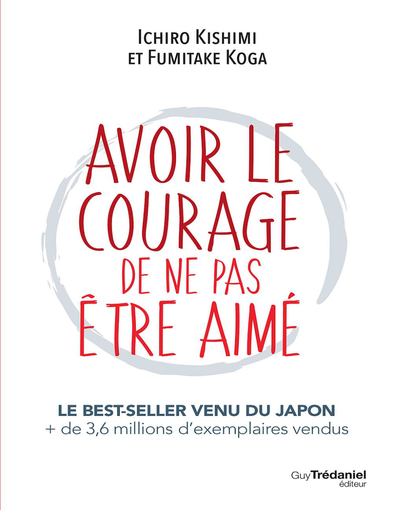

Avoir le courage de ne pas être aimé
Ichiro Kishimi et Fumitake Koga
Lire le PDFTélécharger le PDFFiche d'identité
Présentation et résumé
Dialogue philosophique introduisant la psychologie adlérienne, les rapports aux autres et la possibilité de choisir une manière de vivre moins dépendante de leur jugement.
Chapitre par chapitre
Les passages étiquetés « extrait documentaire » proviennent des pages du PDF et ne constituent pas des résumés rédigés. Les titres et repères sont issus de la fiche source.
1. Note des auteurs — page 6
Résumé non disponible : consulter l’extrait documentaire ci-dessous.
Extrait documentaire : NOTE DES AUTEURS Sigmund Freud, Carl Jung et Alfred Adler sont tous les trois des géants du monde de la psychologie. Ce livre distille les idées et les doctrines philosophiques et psychologiques d’Adler, sous la forme d’un dialogue narratif entre un philosophe et un jeune homme. La psychologie adlérienne bénéficie d’un large soutien en Europe et aux États-Unis et propose des réponses simples et directes à cette…
Ouvrir à cette page2. Introduction — page 10
Résumé non disponible : consulter l’extrait documentaire ci-dessous.
Extrait documentaire : INTRODUCTION JEUNE HOMME : Je vous pose la question encore une fois : vous croyez réellement que le monde est, à tous égards, un endroit simple ? PHILOSOPHE : Oui, ce monde est étonnamment simple, et la vie en elle- même également. JEUNE HOMME : Alors ça, c’est un argument idéaliste que vous soutenez ou une théorie défendable ? En d’autres termes, est-ce que vous êtes en train de dire que tous les problèmes qu’on…
Ouvrir à cette page3. LA PREMIÈRE NUIT. Nie le traumatisme — page 15
Résumé non disponible : consulter l’extrait documentaire ci-dessous.
Extrait documentaire : Le jeune homme entra dans le cabinet et s’avachit sur une chaise. Pourquoi était-il si déterminé à rejeter les théories du philosophe ? Ses raisons étaient plus qu’évidentes. Il manquait de confiance en lui, ce qui, depuis son enfance, avait été aggravé par des sentiments d’infériorité profondément ancrés, liés à son expérience personnelle et académique ainsi qu’à son physique. Raison pour laquelle, peut-être, il…
Ouvrir à cette page4. LA DEUXIÈME NUIT. Tous les problèmes sont des problèmes de relations interpersonnelles — page 52
Résumé non disponible : consulter l’extrait documentaire ci-dessous.
Extrait documentaire : Le jeune homme tint parole ; exactement une semaine plus tard, il retourna au cabinet du philosophe. À dire vrai, il avait ressenti le besoin impérieux d’y retourner déjà deux ou trois jours après sa première visite. Il avait tout bien reconsidéré dans sa tête, et ses doutes s’étaient transformés en certitudes. En un mot, la téléologie, le fait d’attribuer une finalité plutôt qu’une cause à un phénomène donné, était…
Ouvrir à cette page5. LA TROISIÈME NUIT. Rejette les tâches d’autrui — page 113
Résumé non disponible : consulter l’extrait documentaire ci-dessous.
Extrait documentaire : Après deux semaines d’angoisse, le jeune homme rendit à nouveau visite au philosophe. Qu’est-ce que la liberté ? Pourquoi les gens ne peuvent-ils être libres ? Pourquoi est-ce que je ne peux pas être libre ? Quelle est la véritable nature de ce qui peut me contraindre ? La tâche qui lui avait été confiée pesait lourd sur ses épaules, mais il semblait impossible de trouver une réponse convaincante. Plus le jeune…
Ouvrir à cette page6. LA QUATRIÈME NUIT. Là où se trouve le centre du monde — page 155
Résumé non disponible : consulter l’extrait documentaire ci-dessous.
Extrait documentaire : Il était moins une – j’ai failli me faire prendre ! La semaine suivante, le jeune homme rendit à nouveau visite au philosophe, et frappa à la porte d’un air indigné. L’idée de séparer les tâches est certainement utile. Je suis reparti totalement convaincu la dernière fois. Mais ça semble être une manière tellement solitaire de vivre ! Séparer les tâches et alléger le poids de ses relations interpersonnelles, ça…
Ouvrir à cette page7. LA CINQUIÈME NUIT. Vivre pour de bon ici et maintenant — page 200
Résumé non disponible : consulter l’extrait documentaire ci-dessous.
Extrait documentaire : Le jeune homme pensa à part lui : La psychologie adlérienne analyse en profondeur les relations interpersonnelles. Et l’objectif final de ces relations interpersonnelles, c’est le sentiment communautaire. Mais est-ce que cela suffit vraiment ? N’y a-t-il pas quelque chose d’autre que je suis censé accomplir et pour quoi je serais né ? Quel est le sens de la vie ? Où vais-je, et quelle sorte de vie est-ce que…
Ouvrir à cette page8. Épilogue — page 262
Résumé non disponible : consulter l’extrait documentaire ci-dessous.
Extrait documentaire : ÉPILOGUE Dans la vie, il arrive qu’on tombe par hasard sur un livre un jour et qu’on s’en retrouve transformé le lendemain matin. C’est durant l’hiver 1999, alors que j’étais un jeune homme d’une vingtaine d’années, que j’ai eu la grande chance de faire une telle découverte, dans une librairie d’Ikebukuro. C’était Adora Shiringaku Nyumon (Introduction à la psychologie d’Adler), d’Ichiro Kishimi. J’y découvris une…
Ouvrir à cette pageCritiques et sources externes
Lecteur PDF
Archive privée hors ligne. Ne pas publier les PDF sur un dépôt GitHub public sans droits de diffusion.